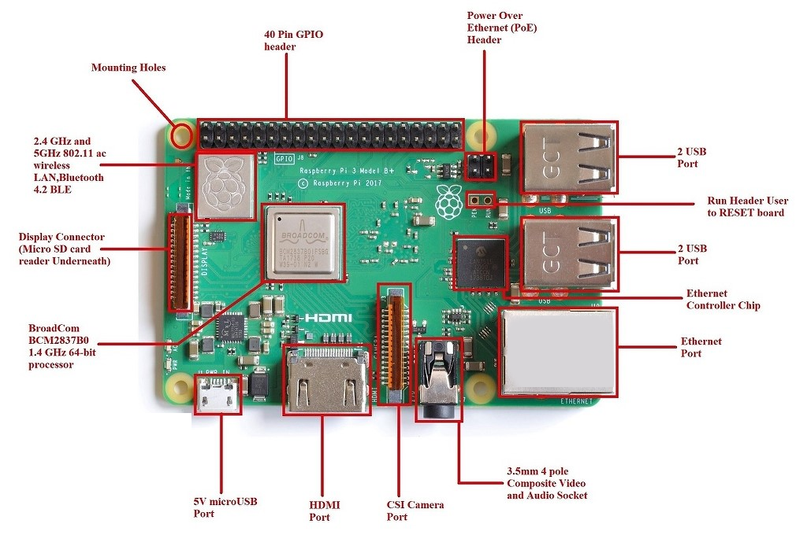

Familiarization to raspberry pi
Raspberry Pi is a credit card-sized, single-board computer developed by the Raspberry Pi Foundation. Launched with the primary goal of promoting computer science education and fostering DIY projects, the Raspberry Pi has gained widespread popularity for its versatility and affordability. Powered by a Broadcom system-on-a-chip (SoC), it provides a fully functional computer with USB ports, HDMI output, GPIO (General Purpose Input/Output) pins, and networking capabilities. Despite its compact size and modest cost, the Raspberry Pi can run a variety of operating systems, making it an ideal platform for educational purposes, home automation, media centers, and numerous other applications. Its accessibility has fueled a vibrant community of enthusiasts, developers, and educators who continually explore innovative uses for this small yet powerful computing device.

Software and Installation
Raspberry Pi OS, formerly known as Raspbian, is the official operating system designed for the Raspberry Pi single-board computers. It is a Debian-based Linux distribution tailored specifically for the Raspberry Pi's ARM architecture. The OS provides a user-friendly environment and comes with essential software tools, including a web browser, office suite, and programming environments. Its lightweight nature makes it well-suited for the limited resources of the Raspberry Pi hardware. Raspberry Pi OS supports a variety of applications and is widely used for educational purposes, DIY projects, and as a platform for learning programming and computing skills. Its modular design allows users to customize and expand their systems according to their specific needs, making it a versatile choice for a range of projects and applications.
Download Raspberry Pi OS
To install OS
-
Raspberry Pi Imager is the quick and easy way to install OS in memorycard.
-
Install Imager into system (https://www.raspberrypi.com/software/)
To install Imager on Ubuntu
Open Terminal and run
sudo apt install rpi-imager
To install Imager on Windows
Connecting Rasberry Pi
Pin diagram of Rasberry Pi
The Raspberry Pi features a set of GPIO (General Purpose Input/Output) pins, which serve as a key component for interfacing with external devices and expansion. These pins are designed to offer versatility and are programmable to function either as input or output. The Raspberry Pi Model B typically includes 40 GPIO pins, providing connectivity for various purposes such as connecting sensors, LEDs, or other peripherals. Additionally, these pins support protocols like I2C, SPI, and UART, enhancing the device's adaptability for a wide range of projects and applications.
Type pinout in command line to output the available pins.
pinout

you need to enable or configure GPIO (General Purpose Input/Output) pins on the Raspberry Pi when connecting sensors. GPIO pins on the Raspberry Pi often default to a general-purpose mode, and you may need to set them up for specific functionalities relevant to your sensor.
Common scenarios:
-
Digital Sensors: For digital sensors that use GPIO pins for input or output, you typically need to configure the pins to act as inputs or outputs. This might involve using software libraries or configuring the pins in your code.
-
Analog Sensors: If you are connecting analog sensors, you may need to use specific pins that support analog-to-digital conversion. In this case, you would need to configure the pins accordingly.
-
Communication Protocols (I2C, SPI, etc.): Many sensors communicate using protocols like I2C or SPI. In such cases, you need to enable the respective communication interface and connect the sensor to the appropriate pins.
Enable port
sudo raspi-config
Follow operations:
Interface option -> S6 Serial Port
Serial login shell -> disable
Serial interface -> enable
Before connecting sensors, it's crucial to refer to the datasheets of both the sensor and the Raspberry Pi to ensure proper pin configuration. Additionally, software libraries or drivers may need to be installed or configured to communicate with the sensor properly.